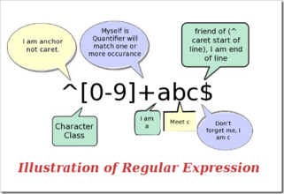

Índice
- Objetivo de este artículo
- Cómo usar este tutorial
- ¿Qué es exactamente una expresión regular?
- Primeros pasos
- Probar expresiones regulares
- Metacaracteres
- Escape de caracteres
- Repetición
- Clases de caracteres
- Condiciones de ramificación
- Negación
- Agrupación
- Retroreferencias
- Aserciones de ancho cero
- Aserciones de ancho cero negativas
- Comentarios
- Codiciosos y perezosos
- Opciones de procesamiento
- Grupos balanceados / coincidencia recursiva
- Otras cosas que no se han mencionado

Objetivo de este artículo
En 30 minutos te hará entender qué es una expresión regular y tener un conocimiento básico de ella, para que puedas usarla en tus propios programas o páginas web.
Cómo usar este tutorial
No te dejes asustar por las expresiones complejas que aparecen a continuación; solo tienes que seguirme paso a paso y descubrirás que las expresiones regulares en realidad no son tan difíciles como imaginabas. Por supuesto, si después de leer este tutorial descubres que entiendes mucho pero no recuerdas casi nada, también es normal: creo que la probabilidad de que una persona sin contacto previo con las expresiones regulares pueda recordar más del 80% de la sintaxis mencionada después de leer este tutorial es cero. Aquí solo se trata de que entiendas los principios básicos; más adelante necesitarás practicar más y usarlas más para dominarlas.
Además de ser un tutorial de introducción, este artículo también intenta convertirse en un manual de referencia de la sintaxis de expresiones regulares que se pueda usar en el trabajo diario. Según la experiencia del propio autor, este objetivo se ha cumplido bastante bien: ya ves, yo mismo no he podido recordar todo, ¿verdad?
¿Qué es exactamente una expresión regular?
Al escribir programas o páginas web que procesan cadenas de caracteres, a menudo surge la necesidad de buscar cadenas que cumplan ciertas reglas complejas.Expresión regularEs la herramienta utilizada para describir estas reglas. En otras palabras, la expresión regular es el código que registra las reglas del texto.
Es muy probable que hayas usado, para buscar archivos en Windows/DOS, elcomodín (wildcard), es decir,*和?. Si quieres buscar todos los documentos de Word en un directorio, buscarías*.doc. Aquí,*se interpreta como cualquier cadena. De manera similar a los comodines, las expresiones regulares también son herramientas para la coincidencia de texto, solo que, en comparación con los comodines, pueden describir tus necesidades con mayor precisión —por supuesto, a costa de ser más complejas—. Por ejemplo, puedes escribir una expresión regular para buscartodas las cadenas que comienzan con 0, seguidas de 2-3 dígitos, luego un guion '-' y finalmente 7 u 8 dígitos(como010-12345678或0376-7654321)。
Nota: el carácteres la unidad más básica que el software de computadora utiliza para procesar texto; puede ser una letra, un número, un signo de puntuación, un espacio, un salto de línea, un carácter chino, etc.Cadena de caractereses una secuencia de 0 o más caracteres.Textoes decir, escritura, cadenas. Decir que una cadenacoincide conalguna expresión regular generalmente significa que una parte (o varias partes por separado) de la cadena puede cumplir las condiciones dadas por la expresión.
Primeros pasos
La mejor manera de aprender expresiones regulares es empezar con ejemplos, entenderlos y luego modificarlos y experimentar por tu cuenta. A continuación se ofrecen muchos ejemplos sencillos con explicaciones detalladas.
Supongamos que en una novela inglesa buscashi, puedes usar la expresión regularhi。
Esta es casi la expresión regular más simple; puede coincidir exactamente con una cadena como:compuesta por dos caracteres, el primero es h, el segundo es i.. Normalmente, las herramientas que procesan expresiones regulares ofrecen una opción para ignorar mayúsculas y minúsculas; si se selecciona esta opción, puede coincidir conhi,HI,Hi,hIcualquiera de estas cuatro situaciones.
Desafortunadamente, muchas palabras contienenhiestos dos caracteres consecutivos, por ejemplohim,history,highetc. Si usashipara buscar, loshitambién serán encontrados. Si se quierebuscar exactamente la palabra hientonces deberíamos usar\bhi\b。
\bes un código especial definido por las expresiones regulares (bueno, algunos lo llamanmetacaracter, metacharacter), que representael inicio o el final de una palabra, es decir, el límite de la palabra.. Aunque normalmente las palabras en inglés están separadas por espacios, signos de puntuación o saltos de línea,\bno coincide con ninguno de estos caracteres separadores de palabras;solo coincide con una posición.。
Nota: si se necesita una expresión más precisa,\bcoincide con una posición tal que su carácter anterior y su carácter posterior no son ambos (uno es, el otro no o no existe).\w。
Si lo que buscas eshi seguido no muy lejos por un Lucy, deberías usar\bhi\b.*\bLucy\b。
Aquí,.es otro metacarácter, que coincide concualquier carácter excepto el salto de línea.。*también es un metacarácter, pero no representa un carácter ni una posición, sino una cantidad: especifica que *el contenido anterior puede repetirse continuamente cualquier número de veces para que toda la expresión coincida.. Por lo tanto,.*unidos significancualquier número de caracteres que no contengan saltos de línea.. Ahora\bhi\b.*\bLucy\bel significado es bastante obvio:primero la palabra hi, luego cualquier cantidad de caracteres arbitrarios (pero no de salto de línea), y finalmente la palabra Lucy.。
Nota: el salto de línea es el carácter '\n', con código ASCII 10 (hexadecimal 0x0A).
Si además usamos otros metacaracteres, podemos construir expresiones regulares más potentes. Por ejemplo, el siguiente caso:
0\d\d-\d\d\d\d\d\d\d\dCoincide con cadenas como esta:que comienza con 0, luego dos dígitos, luego un guion '-' y finalmente 8 dígitos.(es decir, un número de teléfono chino. Por supuesto, este ejemplo solo puede coincidir con el caso en que el código de área tiene 3 dígitos).
Aquí\des un nuevo metacarácter, que coincide conun dígito (0, o 1, o 2, o ...).。-no es un metacarácter, solo coincide consigo mismo: el guion (o signo menos, o raya, o como quieras llamarlo).
Para evitar tantas repeticiones molestas, también podemos escribir la expresión así:0\d{2}-\d{8}. Aquí\dlo que va después{2}({8}) significa que el anterior\ddebe repetirse de forma consecutiva 2 veces (8 veces).。
Probar expresiones regulares
Si no piensas que las expresiones regulares son difíciles de leer y escribir, o eres un genio, o no eres de este mundo. La sintaxis de las expresiones regulares es muy dolorosa de cabeza, incluso para quienes las usan con frecuencia. Debido a que son difíciles de leer y escribir y propensas a errores, es muy necesario encontrar una herramienta para probarlas.
Los detalles de las expresiones regulares varían en diferentes entornos. Aquí se presentan dos herramientas de prueba disponibles:
Metacaracteres
Ahora ya conoces varios metacaracteres muy útiles, como\b,.,*, y también\d. Hay más metacaracteres en las expresiones regulares, por ejemplo\scoincide concualquier carácter de espacio en blanco, incluidos espacios, tabulaciones (Tab), saltos de línea, espacios chinos de ancho completo, etc.。\wcoincide conletras, dígitos, guiones bajos o caracteres chinos, etc.。
Nota: el tratamiento especial de los caracteres chinos está soportado por el motor de expresiones regulares proporcionado por .Net; para las condiciones específicas en otros entornos, consulta la documentación relacionada.
Veamos ahora más ejemplos:
\ba\w*\bCoincide conla letraaal inicio de una palabra: primero el inicio de una palabra (\b), luego la letraa, luego cualquier cantidad de letras o dígitos (\w*), y finalmente el final de la palabra (\b)。
Nota: bueno, ahora hablemos de qué significa 'palabra' en las expresiones regulares: es una secuencia continua de no menos de un\w. Sí, no tiene mucho que ver con las miles de palabras del mismo nombre que hay que memorizar al aprender inglés :)
\d+Coincide con1 o más dígitos consecutivos. El de aquí+es*un metacarácter similar, la diferencia es que*coincide concualquier número de repeticiones (posiblemente 0 veces), mientras que+en cambio coincide con1 o más repeticiones。
\b\w{6}\bcoincide conuna palabra de exactamente 6 caracteres。
| Código | Descripción |
|---|---|
| . | Coincide con cualquier carácter excepto el salto de línea |
| \w | Coincide con una letra, dígito, guion bajo o carácter chino |
| \s | Coincide con cualquier espacio en blanco |
| \d | Coincide con un dígito |
| \b | Coincide con el inicio o el final de una palabra |
| ^ | Coincide con el inicio de la cadena |
| $ | Coincide con el final de la cadena |
Nota: los motores de expresiones regulares suelen ofrecer un método para "probar si una cadena determinada coincide con una expresión regular", como el método RegExp.test() en JavaScript o el método Regex.IsMatch() en .NET. Aquí "coincidir" significa si la cadena contiene o no una parte que cumpla las reglas de la expresión. Si no se usan^和$entonces, para\d{5,12}, usar este método solo puede garantizar que en la cadenacontenga de 5 a 12 dígitos consecutivos, y no que toda la cadena sea de 5 a 12 dígitos.
Metacaracteres^(el símbolo que comparte tecla con el número 6) y$ambos coinciden con una posición, esto es\balgo similar.^Coincide con el inicio de la cadena que quieres buscar,$coincide con el final.^\d{5,12}$。
El de aquí{5,12}y el presentado anteriormente{2}son similares, solo que{2}coincide consolo puede repetirse exactamente 2 veces，{5,12}en cambioel número de repeticiones no puede ser menor que 5 ni mayor que 12, de lo contrario no coincide.
Debido a que se usan^和$, toda la cadena de entrada debe usarse para\d{5,12}coincidir, es decir, toda la entradadebe ser de 5 a 12 dígitos, por lo tanto, si el número de QQ ingresado puede coincidir con esta expresión regular, cumplirá el requisito.
Al igual que la opción de ignorar mayúsculas y minúsculas, algunas herramientas de procesamiento de expresiones regulares tienen también una opción para el modo multilínea. Si se selecciona esta opción,^和$el significado se convierte encoincidir con el inicio y el final de una línea。
Escape de caracteres
Si quieres buscar el propio metacarácter, por ejemplo, si buscas., o*, surge un problema: no puedes especificarlos, porque se interpretarán con otro significado. Entonces tienes que usar\para cancelar el significado especial de estos caracteres. Por lo tanto, debes usar\.和\*. Por supuesto, para buscar\en sí mismo, también debes usar\\.
Por ejemplo:deerchao\.netcoincide condeerchao.net，C:\\Windowscoincide conC:\Windows。
Repetición
Ya has visto anteriormente*,+,{2},{5,12}estas formas de hacer coincidir repeticiones. A continuación se muestran todos los cuantificadores en las expresiones regulares (códigos que especifican cantidad, por ejemplo *, {5,12}, etc.):
| Código/Sintaxis | Descripción |
|---|---|
| * | Repetir cero o más veces |
| + | Repetir una o más veces |
| ? | Repetir cero o una vez |
| {n} | Repetir n veces |
| {n,} | Repetir n o más veces |
| {n,m} | Repetir de n a m veces |
A continuación hay algunos ejemplos de uso de repeticiones:
Windows\d+coincide conWindows seguido de 1 o más dígitos
^\w+coincide conla primera palabra de una línea (o la primera palabra de toda la cadena; cuál de los dos significados coincide depende de la configuración de opciones)
Clases de caracteres
Buscar dígitos, letras o dígitos, y espacios en blanco es muy sencillo, porque ya existen metacaracteres correspondientes a estos conjuntos de caracteres. Pero si quieres hacer coincidir un conjunto de caracteres que no tiene un metacarácter predefinido (por ejemplo, las vocales a,e,i,o,u), ¿qué se debe hacer?
Es muy simple: solo tienes que enumerarlos entre corchetes, como[aeiou]coincide concualquiera de las vocales inglesas，[.?!]coincide conun signo de puntuación (. o ? o !)。
También podemos especificar fácilmente un rango de caracteresrango, como[0-9]el significado representado por ... y\des completamente idéntico:un dígito; del mismo modo[a-z0-9A-Z_]también es completamente equivalente a\w(si solo se considera el inglés).
A continuación hay una expresión más compleja:\(?0\d{2}[) -]?\d{8}。
Nota: "(" y ")" también son metacaracteres; en lasección de agrupaciónse mencionará, por lo que aquí se debe usarescape。
Esta expresión puede coincidir convarios formatos de números de teléfono, como(010)88886666, o022-22334455, o02912345678etc. Vamos a analizarla un poco: primero hay un carácter de escape\(, puede aparecer 0 o 1 veces (?), luego es un0, seguido de 2 dígitos (\d{2}), luego viene)或-或un espaciode ellos, que aparece 1 vez o no aparece (?), y finalmente 8 dígitos (\d{8})。
Condiciones de ramificación
Desafortunadamente, esa expresión también puede coincidir con010)12345678或(022-87654321un formato "incorrecto" como ese. Para resolver este problema, necesitamos usarcondiciones de ramificación. En las expresiones regulares, lascondiciones de ramificaciónse refieren a que hay varias reglas; si se cumple cualquiera de ellas, se debe considerar una coincidencia. El método concreto es usar|para separar las diferentes reglas. ¿No lo entiendes? No importa, mira el ejemplo:
0\d{2}-\d{8}|0\d{3}-\d{7}Esta expresión puedecoincidir con dos tipos de números de teléfono separados por guion: uno con código de área de 3 dígitos y número local de 8 dígitos (como 010-12345678), y otro con código de área de 4 dígitos y número local de 7 dígitos (0376-2233445)。
\(?0\d{2}\)?[- ]?\d{8}|0\d{2}[- ]?\d{8}Esta expresióncoincide con números de teléfono con código de área de 3 dígitos, donde el código de área puede estar entre paréntesis o no, y entre el código de área y el número local puede haber un guion o un espacio, o no haber ningún separador. Puedes intentar usar condiciones de ramificación para ampliar esta expresión de modo que también admita códigos de área de 4 dígitos.
\d{5}-\d{4}|\d{5}Esta expresión se usa para coincidir con códigos postales de EE. UU. La regla de los códigos postales de EE. UU. es 5 dígitos, o 9 dígitos separados por un guion. El motivo de dar este ejemplo es que ilustra un problema:al usar condiciones de ramificación, hay que prestar atención al orden de las condiciones. Si lo cambias a\d{5}|\d{5}-\d{4}entonces solo coincidirá con códigos postales de 5 dígitos (y con los primeros 5 dígitos de los de 9 dígitos). La razón es que al evaluar condiciones de ramificación, cada condición se prueba de izquierda a derecha; si una rama se cumple, no se siguen comprobando las demás.
Agrupación
Ya hemos mencionado cómo repetir un solo carácter (basta con añadir un cuantificador después del carácter); pero si se quieren repetir varios caracteres, ¿qué se hace? Puedes usar paréntesis para especificaruna subexpresión(también llamadaagrupación), y luego puedes especificar el número de repeticiones de esa subexpresión; también puedes realizar otras operaciones sobre la subexpresión (se presentarán más adelante).
(\d{1,3}\.){3}\d{1,3}es unasimple coincidencia de direcciones IPexpresión. Para entender esta expresión, analízala en el siguiente orden:\d{1,3}coincide conun número de 1 a 3 dígitos，(\d{1,3}\.){3}coincide contres dígitos seguidos de un punto inglés (este conjunto es elgrupo) repetido 3 veces, y finalmente se añadeun número de uno a tres dígitos(\d{1,3})。
Nota: cada número en una dirección IP no puede ser mayor que 255. A menudo me preguntan si una dirección como 01.02.03.04, con ceros a la izquierda, es una dirección IP válida. La respuesta es: sí, los números en una dirección IP pueden contener ceros a la izquierda (leading zeroes).
Desafortunadamente, también coincidirá con256.300.888.999este tipo de direcciones IP imposibles. Si se pudieran usar comparaciones aritméticas, quizás se podría resolver fácilmente, pero las expresiones regulares no ofrecen ninguna funcionalidad matemática, por lo que solo se puede usar una larga combinación de agrupaciones, alternancias y clases de caracteres para describir una dirección IP correcta:((2[0-4]\d|25[0-5]|[01]?\d\d?)\.){3}(2[0-4]\d|25[0-5]|[01]?\d\d?)。
La clave para entender esta expresión es entender2[0-4]\d|25[0-5]|[01]?\d\d?; aquí no entraré en detalles, tú mismo deberías poder analizar su significado.
Negación
A veces es necesario buscar caracteres que no pertenecen a una clase de caracteres que se pueda definir fácilmente. Por ejemplo, si se quiere buscar cualquier carácter que no sea un dígito, es necesario usarla negación：
| Código/Sintaxis | Descripción |
|---|---|
| \W | Coincide con cualquier carácter que no sea letra, dígito, guion bajo ni carácter chino |
| \S | Coincide con cualquier carácter que no sea un espacio en blanco. |
| \D | Coincide con cualquier carácter que no sea un dígito. |
| \B | Coincide con una posición que no es el inicio ni el final de una palabra. |
| [^x] | Coincide con cualquier carácter excepto x. |
| [^aeiou] | Coincide con cualquier carácter excepto las letras aeiou. |
Ejemplo:\S+Coincide conuna cadena que no contiene espacios en blanco.。
<a[^>]+>Coincide conuna cadena encerrada entre corchetes angulares que empieza con a.。
Retroreferencias
Al usar paréntesis para especificar una subexpresión,el texto que coincide con esta subexpresión(es decir, el contenido capturado por este grupo) puede procesarse posteriormente en la expresión o en otros programas. De forma predeterminada, cada grupo tiene automáticamente unnúmero de grupo, con la regla: de izquierda a derecha, tomando como referencia el paréntesis izquierdo del grupo, el primer grupo que aparece recibe el número 1, el segundo el 2, y así sucesivamente.
Emmm... en realidad, la asignación de números de grupo no es tan sencilla como acabo de decir:
- El grupo 0 corresponde a toda la expresión regular.
- En realidad, el proceso de asignación de números de grupo requiere dos pasadas de izquierda a derecha: la primera pasada solo asigna números a los grupos sin nombre; la segunda, solo a los grupos con nombre. Por lo tanto, todos los grupos con nombre tienen números mayores que los grupos sin nombre.
- Puedes usar(?:exp)esta sintaxis para que un grupo no participe en la asignación de números de grupo.
Referencia posteriorSe utiliza para buscar de nuevo el texto que coincide con un grupo anterior. Por ejemplo,\1representael texto que coincide con el grupo 1.¿Difícil de entender? Pues mira el ejemplo:
\b(\w+)\b\s+\1\bSe puede usar para coincidir conpalabras repetidas, comogo go, okitty kitty. Esta expresión es, en primer lugar,una palabra, es decir,más de una letra o dígito entre el inicio y el final de una palabra(\b(\w+)\b); esta palabra se captura en el grupo número 1; a continuación vieneuno o más caracteres de espacio en blanco(\s+); y, por último,el contenido capturado en el grupo 1 (es decir, la palabra que coincidió anteriormente).(\1)。
También puedes especificar tú mismo elnombre de grupode una subexpresión. Para especificar el nombre de grupo de una subexpresión, usa esta sintaxis:(?<Word>\w+)(o si reemplazas los corchetes angulares por'también es válido:(?'Word'\w+)), de este modo el\w+nombre de grupo deWordse define como.capturadopor este grupo, puedes usar\k<Word>, así que el ejemplo anterior también se puede escribir de esta manera:\b(?<Word>\w+)\b\s+\k<Word>\b。
Cuando se usan paréntesis, hay también muchas sintaxis con propósitos específicos. A continuación se enumeran las más comunes:
| Categoría | Código / sintaxis | Descripción |
|---|---|---|
| Captura | (exp) | Coincide con exp y captura el texto en un grupo con nombre automático. |
| (?<name>exp) | Coincide con exp y captura el texto en un grupo con el nombre name; también se puede escribir como (?'name'exp). | |
| (?:exp) | Coincide con exp, no captura el texto coincidente ni asigna número de grupo a este grupo. | |
| Aserciones de ancho cero | (?=exp) | Coincide con la posición anterior a exp. |
| (?<=exp) | Coincide con la posición posterior a exp. | |
| (?!exp) | Coincide con una posición que no va seguida de exp. | |
| (?<!exp) | Coincide con una posición que no va precedida de exp. | |
| Comentario | (?#comment) | Este tipo de grupo no afecta en absoluto al procesamiento de la expresión regular; se utiliza para proporcionar comentarios que las personas puedan leer. |
Ya hemos hablado de las dos primeras sintaxis. La tercera,(?:exp)no cambia el procesamiento de la expresión regular; solo que el contenido que coincide con este tipo de grupono se captura en un grupo como en las dos primeras, ni tendrá número de grupo.«¿Por qué querría hacer eso?» — Buena pregunta. ¿Tú qué crees?
Aserciones de ancho cero
Las cuatro siguientes se utilizan para buscar cosas que están antes o después de cierto contenido (pero sin incluir ese contenido); es decir, se usan\b,^,$para especificar una posición que debe cumplir cierta condición (es decir, una aserción); por eso también se las llamaaserciones de ancho cero.Mejor lo ilustramos con un ejemplo:
Nota: una aserción se usa para declarar un hecho que debería ser verdadero. En una expresión regular, la coincidencia solo continúa cuando la aserción es verdadera.
(?=exp)También llamadaaserción positiva de anticipación de ancho ceroyafirma que la parte posterior a la posición en la que aparece puede coincidir con la expresión exp.Por ejemplo,\b\w+(?=ing\b)coincide conla parte anterior de las palabras terminadas en ing (la parte distinta de ing); al buscarI'm singing while you're dancing., coincidirá consing和danc。
(?<=exp)También llamadaaserción positiva de retrovisión de ancho ceroyafirma que la parte anterior a la posición en la que aparece puede coincidir con la expresión exp.Por ejemplo,(?<=\bre)\w+\bcoincidirá conla parte posterior de las palabras que empiezan con re (la parte distinta de re); por ejemplo, al buscarreading a book, coincidirá conading。
Si quieres añadir una coma cada tres dígitos en un número muy largo (por supuesto, empezando desde la derecha), puedes buscar así las partes donde necesitas añadir la coma delante y dentro:((?<=\d)\d{3})+\b; al usarla para buscar en1234567890el resultado es234567890。
El siguiente ejemplo usa ambas aserciones a la vez:(?<=\s)\d+(?=\s)Coincide connúmeros separados por espacios en blanco (una vez más, sin incluir esos espacios en blanco).。
Aserciones de ancho cero negativas
Antes mencionamos cómo buscarcaracteres que no son un carácter determinado o que no están en una clase de caracteres(negación). Pero si lo único que queremos esasegurarnos de que cierto carácter no aparezca, sin querer coincidir con él, ¿qué hacemos? Por ejemplo, si queremos encontrar una palabra en la que aparece la letra q, pero la q no va seguida de la letra u, podemos intentar esto:
\b\w*q[^u]\w*\bCoincide conpalabras que contienenuna q que no va seguida de la letra u.Pero si haces más pruebas (o si eres lo bastante perspicaz para darte cuenta directamente), descubrirás que, si la q aparece al final de la palabra, como enIraq,Benq, esta expresión fallará. Esto se debe a que[^u]siempre tiene que coincidir con un carácter; así que, si la q es el último carácter de la palabra, el[^u]posterior coincidirá con el separador que sigue a la q (puede ser un espacio, un punto u otra cosa), y el\w*\bposterior coincidirá con la siguiente palabra, por lo que\b\w*q[^u]\w*\bpodrá coincidir con toda laIraq fighting。aserción negativa de ancho ceropuede resolver este problema, porque solo coincide con una posición y noconsume ningún carácter. Ahora podemos resolver este problema de esta manera:aserción negativa de anticipación de ancho cero\b\w*q(?!u)\w*\b。
afirma que la parte posterior a esta posición no puede coincidir con la expresión exp.(?!exp)，. Por ejemplo:Coincide con\d{3}(?!\d)tres dígitos, y detrás de estos tres dígitos no puede haber un dígito.Coincide con；\b((?!abc)\w)+\bpalabras que no contienen la cadena continua abc.Del mismo modo, podemos usar la。
aserción negativa de retrovisión de ancho cero(?<!exp),que afirma que la parte anterior a esta posición no puede coincidir con la expresión exp.来Coincide con：(?<![a-z])\d{7}siete dígitos que no están precedidos por una letra minúscula.Un ejemplo más complejo:。
Coincide con(?<=<(\w+)>).*(?=<\/\1>)el contenido dentro de etiquetas HTML simples que no contienen atributos.especifica un。(?<=<(\w+)>)prefijoque es una palabra encerrada entre corchetes angulares：(por ejemplo, podría ser <b>), luego(una cadena arbitraria) y, por último, un.*sufijo. Observa que, en el sufijo,(?=<\/\1>)se usa el escape de caracteres mencionado anteriormente;\/es una referencia posterior que hace referencia exactamente al\1primer grupo capturado; es decir, al contenido quecoincidió antes; de este modo, si el prefijo es realmente <b>, el sufijo será </b>. Toda la expresión coincide con el contenido entre <b> y </b> (recordemos de nuevo: sin incluir el prefijo ni el sufijo).(\w+)Nota: analiza en detalle la expresión
; esta expresión es la que mejor muestra el verdadero propósito de las aserciones de ancho cero.(?<=<(\w+)>).*(?=<\/\1>)Comentarios
Comentarios
incluir comentarios. Por ejemplo:(?#comment)Si quieres incluir comentarios, lo mejor es activar la opción «ignorar los espacios en blanco en el patrón». De este modo, al escribir la expresión puedes añadir espacios, tabuladores y saltos de línea libremente, pero en la práctica todos se ignorarán. Con esta opción activada, todo el texto desde # hasta el final de la línea se tratará como un comentario y se ignorará. Por ejemplo, podemos escribir una de las expresiones anteriores de esta manera:2[0-4]\d(?#200-249)|25[0-5](?#250-255)|[01]?\d\d?(?#0-199)。
Codicioso y perezoso
(?<= # 断言要匹配的文本的前缀
<(\w+)> # 查找尖括号括起来的字母或数字(即HTML/XML标签)
) # 前缀结束
.* # 匹配任意文本
(?= # 断言要匹配的文本的后缀
<\/\1> # 查找尖括号括起来的内容：前面是一个"/"，后面是先前捕获的标签
) # 后缀结束
Codiciosos y perezosos
tantoscaracteres como sea posible. Tomando esta expresión como ejemplo:, coincidirá cona.*bla cadena más larga que comienza con a y termina con b.最长的以a开始，以b结束的字符串Si se usa para buscaraababentonces coincidirá con toda la cadenaaababEsto se llamacoincidenciacodiciosa.
A veces necesitamos másuna coincidenciaperezosa, es decir, hacer coincidirla menor cantidadde caracteres. Los cuantificadores dados anteriormente se pueden convertir al modo de coincidencia perezosa, simplemente añadiendo un signo de interrogación después de ellos.?De esta manera.*?significacoincidir con cualquier número de repeticiones, pero usando la menor cantidad de repeticiones posible siempre que toda la coincidencia tenga éxito.Ahora veamos un ejemplo de la versión perezosa:
a.*?bCoincidir conla cadena más corta que comienza con a y termina con bSi se aplica aaababentonces coincidirá conaab (del primer al tercer carácter)和ab (del cuarto al quinto carácter)。
Nota: ¿Por qué la primera coincidencia es aab (del primer al tercer carácter) y no ab (del segundo al tercer carácter)? En pocas palabras, porque la expresión regular tiene otra regla con mayor prioridad que la regla perezosa/codiciosa: la coincidencia que comienza primero tiene la máxima prioridad: The match that begins earliest wins.
| Código/Sintaxis | Descripción |
|---|---|
| *? | Repite cualquier número de veces, pero lo menos posible. |
| +? | Repite una o más veces, pero lo menos posible. |
| ?? | Repite cero o una vez, pero lo menos posible. |
| {n,m}? | Repite de n a m veces, pero lo menos posible. |
| {n,}? | Repite n o más veces, pero lo menos posible. |
Opciones de procesamiento
Arriba se presentaron varias opciones como ignorar mayúsculas/minúsculas, modo multilínea, etc. Estas opciones pueden usarse para cambiar la forma en que se procesan las expresiones regulares. A continuación se muestran las opciones de expresiones regulares más comunes en .Net:
| Nombre | Descripción |
|---|---|
| IgnoreCase (ignorar mayúsculas/minúsculas) | No distingue entre mayúsculas y minúsculas al coincidir. |
| Multiline (modo multilínea) | Cambia^和$el significado de ^ y $, haciendo que coincidan respectivamente al principio y al final de cualquier línea, y no solo al principio y al final de toda la cadena. (En este modo,$el significado exacto de $ es: coincidir con la posición antes de \n y la posición antes del final de la cadena.) |
| Singleline (modo de una sola línea) | Cambia.el significado de . , haciendo que coincida con cada carácter (incluido el salto de línea \n). |
| IgnorePatternWhitespace (ignorar espacios en blanco) | Ignora los espacios en blanco no escapados en la expresión y habilita#los comentarios marcados por #. |
| ExplicitCapture (captura explícita) | Solo captura los grupos que han sido nombrados explícitamente. |
Una pregunta frecuente es: ¿solo se puede usar una de las dos opciones, modo multilínea o modo de una sola línea, a la vez? La respuesta es: no. Estas dos opciones no tienen ninguna relación entre sí, aparte de que sus nombres son similares (lo que resulta confuso).
Nota: en C#, puedes usar elconstructor Regex(String, RegexOptions)para establecer las opciones de procesamiento de la expresión regular. Por ejemplo: Regex regex = new Regex(@"\ba\w{6}\b", RegexOptions.IgnoreCase);
Grupos balanceados / coincidencia recursiva
Nota: la sintaxis de grupos balanceados que se presenta aquí está soportada por .Net Framework; otros lenguajes/bibliotecas no necesariamente soportan esta funcionalidad, o la soportan pero requieren una sintaxis diferente.
A veces necesitamos hacer coincidir estructuras comoestructuras jerárquicas anidadas como ( 100 * ( 50 + 15 ) ), en este caso, simplemente usar\(.+\)solo coincidirá con el contenido entre el paréntesis izquierdo más a la izquierda y el paréntesis derecho más a la derecha (aquí estamos discutiendo el modo codicioso; el modo perezoso también tiene el siguiente problema). Si en la cadena original el número de paréntesis izquierdos y derechos no es igual, por ejemplo( 5 / ( 3 + 2 ) ) ), entonces el número de ambos en nuestro resultado de coincidencia tampoco será igual. ¿Hay alguna manera de hacer coincidir, en una cadena así, el contenido más largo entre paréntesis que se corresponden?
Para evitar(和\(confundirte por completo, mejor usemos corchetes angulares en lugar de paréntesis redondos. Ahora nuestro problema se convierte en cómoxx <aa <bbb> <bbb> aa> yycapturar, en una cadena como esta, el contenido más largo dentro de corchetes angulares emparejados?
Aquí se necesitan las siguientes construcciones sintácticas:
- (?'group')Nombra el contenido capturado como group y lo empuja a lapila (Stack)
- (?'-group')Extrae de la pila el último contenido capturado con el nombre group que se haya empujado; si la pila estaba vacía, la coincidencia de este grupo falla.
- (?(group)yes|no)Si existe en la pila un contenido capturado con el nombre group, continúa haciendo coincidir la parte yes de la expresión; de lo contrario, continúa con la parte no.
- (?!)Aserción de anticipación negativa de ancho cero; como no hay expresión posterior, el intento de coincidir siempre falla.
Nota: si no eres programador (o te llamas programador pero no sabes qué es una pila), puedes entender las tres sintaxis anteriores de esta manera: la primera es escribir un 'group' en la pizarra, la segunda es borrar un 'group' de la pizarra, y la tercera es ver si todavía hay algún 'group' escrito en la pizarra; si lo hay, continúa con la parte yes; de lo contrario, con la parte no.
Lo que necesitamos hacer es, cada vez que encontremos un corchete angular izquierdo, empujar un 'Open'; cada vez que encontremos un corchete angular derecho, extraer uno; al final, ver si la pila está vacía; si no está vacía, eso demuestra que hay más corchetes izquierdos que derechos, y la coincidencia debería fallar. El motor de expresiones regulares realizará un retroceso (descartando algunos caracteres del principio o del final) para intentar que toda la expresión coincida.
< #最外层的左括号
[^<>]* #最外层的左括号后面的不是括号的内容
(
(
(?'Open'<) #碰到了左括号，在黑板上写一个"Open"
[^<>]* #匹配左括号后面的不是括号的内容
)+
(
(?'-Open'>) #碰到了右括号，擦掉一个"Open"
[^<>]* #匹配右括号后面不是括号的内容
)+
)*
(?(Open)(?!)) #在遇到最外层的右括号前面，判断黑板上还有没有没擦掉的"Open"；如果还有，则匹配失败
> #最外层的右括号
Una de las aplicaciones más comunes de los grupos balanceados es hacer coincidir HTML. El siguiente ejemplo puede hacer coincidiretiquetas <div> anidadas：<div[^>]*>[^<>]*(((?'Open'<div[^>]*>)[^<>]*)+((?'-Open'</div>)[^<>]*)+)*(?(Open)(?!))</div>.
Otras cosas que no se han mencionado
Arriba se han descrito muchos elementos para construir expresiones regulares, pero aún hay muchas cosas que no se han mencionado. A continuación se muestra una lista de elementos no mencionados, con su sintaxis y una breve descripción.
| Código/Sintaxis | Descripción |
|---|---|
| \a | Carácter de alarma (al imprimirlo, la computadora emite un pitido) |
| \b | Normalmente es la posición de límite de palabra, pero si se usa dentro de una clase de caracteres, representa retroceso. |
| \t | Carácter de tabulación, Tab |
| \r | Retorno de carro |
| \v | Tabulador vertical |
| \f | Salto de página |
| \n | Salto de línea |
| \e | Escape |
| \0nn | Carácter cuyo código octal en ASCII es nn |
| \xnn | Carácter cuyo código hexadecimal en ASCII es nn |
| \unnnn | Carácter cuyo código hexadecimal en Unicode es nnnn |
| \cN | Carácter de control ASCII. Por ejemplo, \cC representa Ctrl+C |
| \A | Inicio de la cadena (similar a ^, pero no se ve afectado por la opción de multilínea) |
| \Z | Final de la cadena o final de línea (no se ve afectado por la opción de multilínea) |
| \z | Final de la cadena (similar a $, pero no se ve afectado por la opción de multilínea) |
| \G | Inicio de la búsqueda actual |
| \p{name} | Clase de caracteres denominada name en Unicode, por ejemplo \p{IsGreek} |
| (?>exp) | Subexpresión codiciosa |
| (?<x>-<y>exp) | Grupo balanceado |
| (?im-nsx:exp) | Cambia las opciones de procesamiento dentro de la subexpresión exp |
| (?im-nsx) | Cambia las opciones de procesamiento para la parte posterior de la expresión |
| (?(exp)yes|no) | Trata exp como una aserción de anticipación positiva de ancho cero; si puede coincidir en esta posición, usa yes como expresión de este grupo; de lo contrario, usa no. |
| (?(exp)yes) | Igual que arriba, solo que usa una expresión vacía como no. |
| (?(name)yes|no) | Si el grupo llamado name ha capturado contenido, usa yes como expresión; de lo contrario, usa no. |
| (?(name)yes) | Igual que arriba, solo que usa una expresión vacía como no. |
Más tutoriales
Puedes consultar tutoriales más detallados en:Tutorial de expresiones regulares
Fuente: http://deerchao.net/tutorials/regex/regex.htm
Haz clic para compartir notas
<p style="font-size:14px;">¡Las notas deben ser una extensión del contenido de este artículo!</p><br> <p style="font-size:12px;"><a href="../tougao.html" target="_blank">Para enviar un artículo, puedes hacer clic aquí</a></p> <p style="font-size:14px;"><a href="./runoob-user-test-intro.html" target="_blank">Cómo obtener el código de invitación de registro</a></p> <h3 class="text-muted"><i class="fa fa-info-circle" aria-hidden="true"></i> ¡Debes <a href=".." class="runoob-pop">iniciar sesión</a> antes de compartir notas!</h3> <p><a href="./runoob-user-test-intro.html" target="_blank">Cómo obtener el código de invitación de registro</a></p>